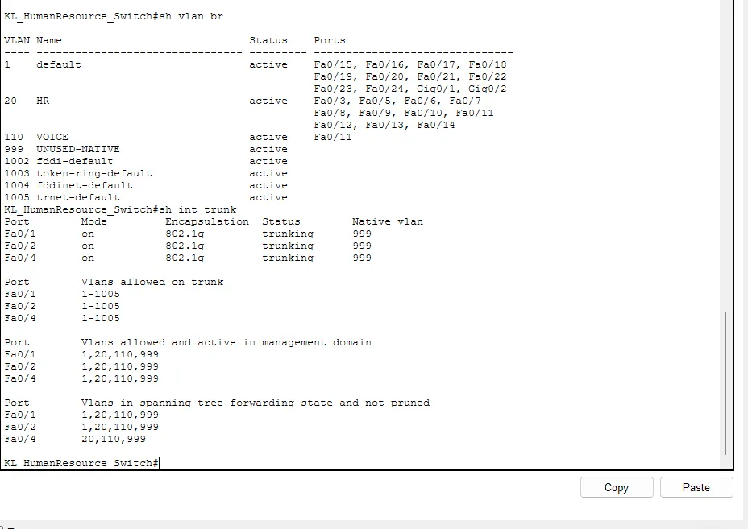

A VLAN splits one physical switch into several separate Layer 2 networks. In my networking assignment I had to design a company network across four sites: a Kuala Lumpur HQ plus Malacca, Johor Bahru and Penang. At HQ the departments each got their own VLAN. This article shows the exact pattern I used on the KL access switches, in Cisco Packet Tracer, and the small errors that cost me time.
The VLAN plan
Before touching a switch I fixed the numbers, because VLAN IDs end up in every other configuration:
- VLAN 10: Management
- VLAN 20: Human Resources
- VLAN 30: Design
- VLAN 110: Voice, shared by the HR and Design switches for IP phones
- VLAN 999: an unused VLAN used only as the native VLAN on trunks
Each VLAN also got its own subnet through VLSM, so the Management VLAN is a small /28 while the Design VLAN, with the most devices, got a /25. The VLAN number and the subnet number should be easy to relate. I used 10, 20 and 30 for the third octet of the address, which made troubleshooting much easier.
Creating VLANs and access ports
On each access switch you create the VLAN, name it, and assign the ports that plug into PCs.
vlan 20
name HR
vlan 110
name VOICE
vlan 999
name UNUSED-NATIVE
!
interface range fa0/5 - 13
switchport mode access
switchport access vlan 20The IP phone port is a special case. It carries the PC's data in VLAN 20 and the phone's traffic in VLAN 110, so it gets switchport voice vlan 110 in addition to the access VLAN.
Trunks to the core
The uplinks to the core switches carry every VLAN, so they are 802.1Q trunks. I changed the native VLAN from the default VLAN 1 to 999, which nothing else uses. That reduces the risk of VLAN hopping through untagged traffic.
interface range fa0/1 - 2
switchport mode trunk
switchport trunk native vlan 999
switchport nonegotiateVerifying with two commands
I rely on show vlan brief and show interfaces trunk. The first tells you which ports belong to which VLAN, the second tells you which ports are trunking, with what encapsulation and native VLAN. Here is the HR switch after configuration: VLAN 20 holds the access ports, VLAN 110 holds the phone port, and the three uplinks show as 802.1Q trunks with native VLAN 999.

A management address so you can SSH in
A Layer 2 switch has no IP address by default. I gave the Management VLAN interface an address, and pointed the switch's default gateway at the HSRP virtual IP, so it stays reachable if one core switch fails (more on that in my HSRP and EtherChannel article).
interface vlan 10
ip address 192.168.10.14 255.255.255.240
no shutdown
exit
ip default-gateway 192.168.10.1Mistakes I made
- Typing a wrong subnet mask. My first attempt at the management address was cut off partway through the mask, and IOS answered with "% Invalid input detected at the '^' marker." The caret points at the exact spot where the command went wrong, so read where it points before retyping.
- "% Incomplete command" on ip default-gateway. I forgot to put the address after the command. IOS is telling you something is missing, not that something is wrong.
- Native VLAN mismatch warnings. While I configured one end of a trunk with native VLAN 999 and the other was still on VLAN 1, the switches printed CDP-4-NATIVE_VLAN_MISMATCH messages. They disappear once both ends match. Do not ignore them on a real network, because a mismatch can leak traffic between VLANs.
- Not saving. The running configuration is lost on reload unless you save it with
wr. I saved after each switch.
What I would remember from this
Decide the VLAN numbers and subnets first, apply the same template to every access switch, and verify each one before you move on. Then once the VLANs exist, the next job is giving each of them an address. I covered that in DHCP and DNS in Packet Tracer, and locking down the ports is in the port security article.